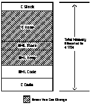
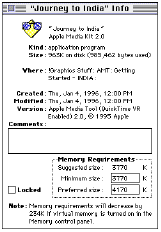
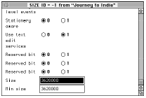
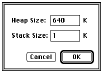
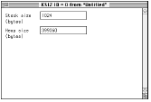

|
|
The Apple Media Tool and Apple Media Tool Programming Environment products have been discontinued.
This Note explains what is meant by the Apple Media Tool (AMT) "Not Enough
External Memory (3)" error, and provides several techniques for preventing its
occurrence. It is targeted at both Macintosh and Windows developers who are
creating multimedia titles with AMT and the Apple Media Tool Programming
Environment (AMTPE), versions 1.2 and 2.0.
Updated: [July 1 1996]
|
Defining the Error
The "Not Enough External Memory (3)"error means there is not enough C heap
memory for your title. Typically, this error is generated when there is not
enough memory to load a media item required by a title. (For AMTPE-savvy
programmers, this is the error message returned by the keyIfNULL method.) The
term external memory in the error message refers to the standard C
handle and pointer heap in the application environment. It is called external
(just like the Apple Media Language (AML) keyword) because it is managed by the
C code of the AMT runtime engine. Internal memory is the AML heap (see
pg. 4-27 through 4-28 of the AMTPE User's Guide for more information).
Back to top
Preventing the Error
The way to avoid this error is to make sure your title has enough C heap memory
for each and every screen. This Technote provides techniques for determining
how much memory your title requires and then knowing how much to allocate.
Back to top
Memory Requirements For Your Title
An AMT title requires a certain amount of memory to operate. Memory allocated
to a given title is broken down internally by AMT into the following
components:
- C stack
- C heap
- AML stack
- AML heap
- AML code
- C code
Figure 1 shows how the various components of a title are stored in memory.

Figure 1. Memory components of an AMT title
C stack
The C stack is an area of memory that holds temporary information used while
your title is running. The C function calling chain (and some associated data)
and any local variables are kept here. Its size is dependent on the particular
system configuration. There is no way for either the end user or the developer
to change the amount of memory allocated to the C stack.
C heap
The C heap is the standard C heap from which memory can be allocated using
system calls such as NewPtr, NewHandle (under Mac OS) and GlobalAlloc (under
Windows). When your title loads a media item, it allocates a block of memory
from the C heap to hold that item.
Under Mac OS, the size of the C heap can be calculated by totaling the sizes of
the other memory areas, and subtracting this total from the overall amount of
memory allocated to the title. For example, if you allocate 5 MB to your title,
and 3 MB is required for the other memory areas, then 2 MB is allocated to the
C heap.
Under Windows, the size of the C heap is the amount of free memory available to
Windows, minus the sizes of the other memory areas. For example, if you have 8
MB free on your Windows machine, and the other memory areas of your title use 3
MB, then 5 MB is allocated to the C heap. Because the total amount of free
memory will vary, depending on the number of other Windows applications that
are running when your title is launched, the size of the C heap will vary each
time you run your Windows titles.
This means that you can change the size of the C heap by changing the sizes of
the other memory areas. Methods to change the sizes of other memory areas are
discussed later in this Technote.
AML stack
The AML stack is an area of memory that holds temporary information used while
your title is running . The AML calling chain and any local variables are kept
here.
For titles built with RuntimeMaker or AMTPE, the AML stack default size is 1K.
For titles built with AMT, the Macintosh AML stack default size is 128K, and
for a Windows title the AML stack default size is 64K.
There is usually no need to change this value for titles built with either the
minimal or standard AMT engines. If there is a lot of recursion in your code,
or for titles built using a custom engine, it may be helpful to increase this
value.
Methods to change the size of this component are discussed later in this
Technote.
AML heap
The AML heap is an area used to load any static or dynamically created objects
for your title (see pages 4-26 through 4-28 of the AMTPE User's Guide
for more details on static and dynamic objects). For titles built with Runtime
Maker or AMTPE, the default size is 640K. For AMT 2.0 titles, a minimum value
of 256K must be allocated to this component (this can be changed - see the
section "How Do I Change AML Heap/Stack Memory Allocated To My Title").
This value should be increased or decreased depending on the number of objects
the title is using. Because it is not easy to estimate ahead of time how much
space a title will need, there are ways (discussed below) to calculate an
approximate value.
The default AML heap size for the AMT application is 2048K.
AML code
The AML code memory area contains all the compiled AML source code for your
title. The size of this area is dependent on how much AML code a title
contains. There is no way for the end user to change the size of this. AMTPE
developers will often be able to optimize the number of AML objects in a
project, and thus reduce the amount of AML code generated. Techniques for
achieving this can be found, among other places, in Chapter Three of the AMTPE
User's Guide.
C code
The C code component contains all the C code for your title. Its size will
depend, of course, on how much C code the title contains.
A Note about Screen Bit Depths
When you load media items that have a visible component, in particular PICT
images, the amount of external memory that they require depends on the bit
depth of the screen on which the title is executing. The exact amount of
external memory required to store a PICT file can be calculated by the
formula:
image width x image height x screen bit depth
Therefore, to display an image which is 320 x 480 pixels in size on an 8-bit
screen, your title will need 320 x 480 x 8 = 1,228,800 bits of memory, which is
153,600 bytes, which is 150K. To display the same 320x480 pixel image on a
16-bit screen requires 300K of external memory. It is important to note that
the amount of external memory is dependent on the bit depth of the screen that
the title is running on, and not the bit depth of the original PICT image.
|
Note:
When your title runs under Mac OS, the total amount of external memory
available is fixed. Under Windows, the size of the external memory pool will
vary, depending on the amount of free memory available to Windows when the
title is launched.
|
Back to top
Allocating Memory For Your Title
Macintosh Titles
For Macintosh titles, you allocate a memory partition in either one of two
ways: via the Finder or a Resource Editor.
Via the Finder
- To allocate memory for your Macintosh title via the Finder, click on your
title icon so that it's highlighted.
- In the Finder, go to the File menu.
- Choose Get Info menu item.
- In the Memory Requirements dialog box that appears, enter values in the
Minimum size and Preferred size fields, as shown in Figure 2.

Figure 2. The GetInfo box for Apple Media Tool title.
via a Resource Editor
- Modify the 'SIZE' resource of your title using a resource editor like
ResEdit. Figure 3 shows what the resource looks like when viewed with ResEdit.

Figure 3. SIZE resource
There are three 'SIZE' resources in your title, numbered -1, 0, and 1. The -1
'SIZE' resource corresponds to the Suggested size field of the Get Info dialog
box, the 0 'SIZE' resource sets the Minimum size field, and the 1 'SIZE'
resource sets the Preferred size field.
For each of the 'SIZE' resources you set the number of bytes allocated to that
setting in the Size field (see Figure 3 above). You can also set a Min size,
also in bytes. This is the minimum value that the user can set that field to
using the Get Info dialog box. For example, if you set the Size field of the 0
'SIZE' resource to 5120000 and the Min size field to 2560000, then the value
displayed in the Get Info dialog box's Minimum size field will be 5000K, and
the smallest value the user can set this to will be 2500K.
AMTPE users can also set the default values assigned to the 'SIZE' resources
for all the projects they compile. This is done by using ResEdit to alter the
'SIZE' resources in the file Title.rsrc, which is found in the Title folder
within your Key folder. All subsequent projects will use these new values when
they are compiled.
|
Note:
The memory partition you allocate to your title will be divided up among
the C code/heap/stack and AML code/heap/stack areas discussed in the previous
section. For example, if you allocate a 6 MB memory partition to your title,
those 6 MB will be divided up internally by AMT among the various areas.
|
Windows Titles
General Memory Allocation
General memory allocation for an application running under a Windows 3.1 or
Windows 95 environment is handled differently than under Mac OS. The Windows
Memory Manager parcels out memory to applications as needed from the total free
memory space, not from a partition of pre-defined size. There is no need,
therefore, to specify a memory partition for your title under Windows. If you
request memory and the Windows Memory Manager can find it, it will return it to
you. If it can't find any, an allocation error is returned.
For AMT 2.0 titles, you can specify the minimum amount of free RAM that must be
available before your title will run needed at various screen bit depths by
modifying the MINIMUM RAM FOR BIT DEPTH variable in the .INI file associated
with your Windows title. For example, to set the minimum free RAM needed when
running on an 8-bit screen to 4096K, you would include the following line in
your .INI file:
MINIMUM RAM FOR BIT DEPTH 8=4096
(For a setting to take affect, you must remove the semicolon in front of the
variable in the .INI file).
When your Windows title starts up, it checks the screen bit-depth, then reads
the .INI file to find out the minimum free RAM required for that bit-depth. If
there is enough free RAM available, it starts up, and allocates fixed amounts
of that memory for the AML stack and AML heaps already discussed. You can
control the size of each of these areas, as described in the next section.
Back to top
Changing the AML Heap & Stack Components
The memory allocated to the AML heap and stack (as well as the AML code, C code
and C stack) is taken from the total memory allocated to a title, as previously
described. This means that if you give your title a 5 MB memory partition on
the Macintosh, and you give 2 MB to the AML heap and stack, the AML heap
and stack memory is subtracted from the total memory allocated to the title,
i.e., 5 MB - 2 MB = 3 MB of memory is available for the other components of a
title.
Here are some techniques you can use to change the AML stack and heap settings
for your title.
Macintosh Titles
AMT 2.0 titles
To modify the amount of memory allocated to the AML heap and stack areas for a
Macintosh-based title, launch the title while holding down the control key.
Doing this will bring up the dialog box shown in Figure 4.

Figure 4. AML Heap/Stack settings dialog
Simply enter the desired values in the edit boxes. The values you enter will be
stored in the 'KSIZ' resource for the title.
|
Note:
The 'KSIZ' resource may not exist for your title. It is created only if
you alter the heap and/or stack values for your title. If you do not modify
either of these settings, the default values of 640K for the heap and 1K for
the stack will be used.
|
|
Note:
There is a minimum value of 256K that must be allocated to the AML heap.
You can change this restriction, but it requires that you use the AMTPE
environment. If you have AMTPE, alter the code for the AdjustKSIZ method in the
file Application.c.
|
AMT 1.2 titles
You must manually modify the 'KSIZ' resource using a resource editor such as
ResEdit. Figure 5 represents the 'KSIZ' resource as viewed from ResEdit.

Figure 5. A sample title 'KSIZ' resource
Windows Titles
AMT 2.0 titles
You can modify the amount of memory allocated to the AML heap and stack areas
for a Windows title by opening up the .INI file associated with your title
and changing the HEAP and STACK program variables.
You need to remove the semicolon in front of each variable in your .INI file
for these settings to take effect.
Here is what these variables look like in a typical .INI file:
[SIZE]
HEAP=640
STACK=64
AMT 1.2 titles
You can modify the amount of memory allocated to the AML heap and stack areas
by modifying the MEMORY resource that resides in your title's .EXE executable
file. Here is the format of this resource (note that the actual values may be
different):
0 MEMORY
BEGIN
640, /* WORD (KB) Key Heap Size */
63, /* WORD (KB) Key Stack Size */
4096 /* WORD (KB) Needed Global Size */
END
You can view and/or edit this resource on a Windows system with a resource
editor. When editing this resource, keep in mind that the bytes in memory are
low-byte followed by high-byte. This differs from the way that bytes in memory
are handled by the Macintosh.
There is no minimum 256K AML heap value for Windows titles.
Back to top
Viewing Free Memory While Your Title is Executing
AMT 2.0 titles, both Macintosh and Windows
You can see how much C heap and AML heap memory is free in a running title by
launching the title with the Shift key held down. This is shown in the
upper-left corner of each screen of your title, as illustrated in Figure 6.
Figure 6. Viewing free memory as your title is executing
The Free value is the amount of memory available (unused) in the C heap -- in
other words, the amount of external memory available. As previously stated, all
the media items for a screen are loaded into the C heap. AMT allocates memory
to the C heap after memory has been allocated to all the other
components of a title.What is left over is given to the C heap.
The AML Free value is the amount of memory available in the AML heap. As stated
earlier, the AML heap contains all the static and dynamic objects of a title.
Memory is allocated to the AML heap before any memory is given to the C heap.
This means that as you increase the AML heap and/or stack size, you are
actually decreasing the amount of memory available for the C heap.
The Free numbers displayed for each screen will be different depending upon
whether you are viewing your title from within the AMT application or outside
of it (i.e., in the Finder or in the Windows environment), since larger memory
partitions are usually allocated to the AMT application than to the title
itself.
When optimizing the amount of memory needed for your title, the goal is to make
the above Free values as close to zero as possible. Some strategies for doing
this are described in the section "Allocating Enough 'External Memory' for Your
Title" in this Technote.
|
Windows 95 Note:
Under Windows 95, holding down the shift key while double-clicking on a
application's .EXE file from the desktop will cause all the files in the
Windows to be opened. This can be confusing and is also likely the reduce the
free memory available to your title, since it can cause several other
applications to be launched along with your title. To avoid this, double-click
on the .EXE file, then press the shift key, once the title has started loading.
|
AMT 1.2 titles, both Macintosh and Windows
For AMT 1.2 titles running on either the Macintosh or Windows, there is no
facility for viewing the free C heap and AML heap memory of a running title.
Instead, you will want to use some of the techniques described in the following
sections to calculate how much memory is needed for each screen in your
title.
Using a Windows Memory Watcher App
You can see how much memory a title is using on a Windows system by running one
of the many memory watcher applications, such as HeapWalker, which ships with
Microsoft Visual C++ version 1.5.
Back to top
Determining Memory Requirements For Your Title's Media
Media items use space in both the AML heap and C heap. The External Memory
referred to in the error message is actually the C heap. It is good, therefore,
to know the memory requirements of your media. What follows are techniques for
determining how much memory is required by your media.
AML Media Object Requirements
In an object-oriented language such as AML, programs are made up of objects.
Each AML object requires a certain amount of AML heap memory. For example, an
AML object of class ANY that does not define any methods or define or set any
field values takes up around 20 bytes of heap space. Every screen and media
item in your title will use one object. Additionally, each time you place an
item on a screen, you use one more object. Using this information you can get
an idea of how much AML heap memory is required each media object.
Dynamic Memory Requirements For Media
In addition to the AML Media Object requirements, media objects have dynamic
memory requirements. Dynamic memory requirements refer to the amount of memory
needed to hold the media items for a title at run-time. Any time a media item
is used, it must be loaded into the C heap in memory. The amount of memory
needed for media loading will vary, depending upon the media items for the
particular screen being displayed and the system it's running on.
Calculating Media Dynamic Memory Requirements
AMT 2.0 Titles
Here is a simple technique for determining the amount of C heap and AML heap
memory needed to load the media for a given screen in a Macintosh or Windows
title. Follow these steps:
- Allocate a large amount of memory to your title (e.g., 16 MB).
- Allocate a large amount of memory to the AML heap for your title (e.g., 4
MB).
- Add a dummy root screen to your title (e.g., an empty object, a mouse down
event and a goto action to the first screen).
- Launch the title while pressing the Shift key.
- Note the "Free" & "AML Free" numbers for the dummy first screen.
- Move to the next screen in the title.
- Note the new "Free" & "AML Free" numbers.
- The media requirements for the current screen are the difference between
the "Free" & "AML Free" values on the current screen and the previous
screen.
AMT 1.2 (or 2.0) Titles
You can actually calculate the memory requirements for certain types of media.
For example, open up any PICT file in Adobe PhotoShop and it will tell you the
amount of memory needed to load the image.
With other media items, such as QuickTime movies, the process is more
difficult. QuickTime movies require memory both to play the movie as well as
for the movie controller. One way to calculate the amount of memory needed to
play a QuickTime movie is to use a low-level debugger such as MacsBug. Try the
HD (heap dump) command both before and during the time a movie is playing. The
difference between the two is the amount of memory needed for the media
(although the amount of free memory will vary while a movie is running --
you'll need to note the maximum value) .This technique also applies to other
types of media.
Once you know the memory requirements for each piece of media, you can use
these numbers to calculate the memory requirements for each screen (by totaling
all the media in the screen). After you have determined the requirements for
each screen, make a note of the maximum amount of memory used by any screen (at
runtime this memory will taken from the C heap). When moving from one screen to
the next, AMT must have enough memory to hold all the media items for the
current screen.
Back to top
Allocating Enough "External" Memory For Your Title
The "Not Enough External Memory" error means that not enough C heap memory was
allocated to your title. The fix, of course, is to make sure enough C heap
memory is available. Remember that memory is allocated to the C heap
after memory has been allocated to all the other components for a title.
What is left-over is given to the C heap.
Make sure enough C heap memory is allocated to the title (below are techniques
for doing this). Once you have done this, the next step is to get the "free"
amounts as close to zero as possible, so that your title can run in as little
RAM as possible. The techniques for doing this are described as follows:
AMT 2.0 Titles
Macintosh and Windows Titles
Here is one method for determining the minimal amount of memory for your
Macintosh and Windows titles:
- Allocate a large amount of memory to your title (e.g., 8 MB)
- Allocate a large amount of memory to the AML heap for your title, (e.g., 2
MB).
- Launch your title while pressing the Shift key (so you can view the
available space).
- Browse the title and look for minimum "Free" and "AML Free" numbers.
- Subtract the minimum "AML Free" number from the number you allocated to the
AML heap (that you view using the Control key trick described in the section
"Changing the AML Heap & Stack Components"). If this new value is less than 256K, AMT will set it to 256K. Refer to the section "Changing AML Heap & Stack Components."
- Set the AML heap to this new value.
- Subtract the minimum "Free" number from the total memory partition you have allocated (i.e., the number from the "Get Info" window or 'SIZE' resource for your title).
- Set the title's total memory partition to this new value.
AMT 1.2 Titles
Macintosh, Windows
There is no facility for viewing the amount of free C heap (and AML heap)
memory for each screen of a running AMT 1.2 title. (You can, however, get an
estimate of the amount of C heap and AML heap memory necessary for your media
using techniques described in the previous section). Instead, you will have to
determine this value through trial and error. The technique for doing this is
identical to what was described for AMT 2.0 titles.
Note the point at which you start getting memory errors. Backing up to the last
allocated memory size before you got errors will enable you to determine your
title's minimal memory requirements.
|
Note:
If you get the "Not Enough Internal Memory (2)" error, you have not
allocated enough AML heap memory.
|
Back to top
Building Large Projects
When you build large projects, consisting of several hundred objects, you will
sometimes find that Runtime Maker fails to complete the build. The Runtime
Maker itself also has stack and heap memory areas that you can adjust, and it
too can run out of heap memory.
If your larger projects fail to build using Runtime Maker, you should try
increasing its available heap memory. To do this, double-click the Runtime
Maker icon, while holding down the control key. This brings up the dialog box
shown in Figure 4 above. You can then increase the heap size to allow Runtime
Maker to build your project.
You can permanently increase the size of Runtime Maker's heap size by adjusting
its 'KSIZ' resource using ResEdit.
AMTPE users may also find that the compile process can hang because
insufficient heap has been allocated to the key compiler. If a large project
fails to build, use ResEdit to open the file key, which is found in the Tools
folder within your Key folder. This is the AML compiler, and it contains a
'KSIZ' resource. Increase the heap size, and restart MPW before trying to
recompile your project.
Back to top
Using Other Memory Optimization Techniques
Another technique to reduce the amount of memory required by your title is to
reduce the number of AML program objects. AMTPE users should read Chapter 3 of
the AMTPE User's Guide for an example of how this might be done.
There are third-party products available that will help you cut down on the
number of program objects. These products make use of a technique called media
switching. This lets you dynamically switch the media for a given AML object.
The ability to switch the media for a given media object can help dramatically
reduce the total number of objects in your title.
Back to top
Summary
The "Not Enough External Memory (3)" error message indicates a lack of C heap
memory for your title. This Technote describes techniques for allocating C heap
memory, viewing free C heap memory, and calculating the amount of C heap memory
needed for your title. AMT and AMTPE developers can use techniques described in
this Technote to ensure that enough C heap memory is available for their
Macintosh and Windows multimedia titles.
Back to top
References
Apple Media Tool Reference Guide
Apple Media Tool Programming Environment User's Guide, Apple
Computer.
Apple Media Tool Programming Environment 2.0 Reference, Apple
Computer
Back to top
Downloadables
|

|
Acrobat version of this Note (200K).
|
Download
|
Back to top
|